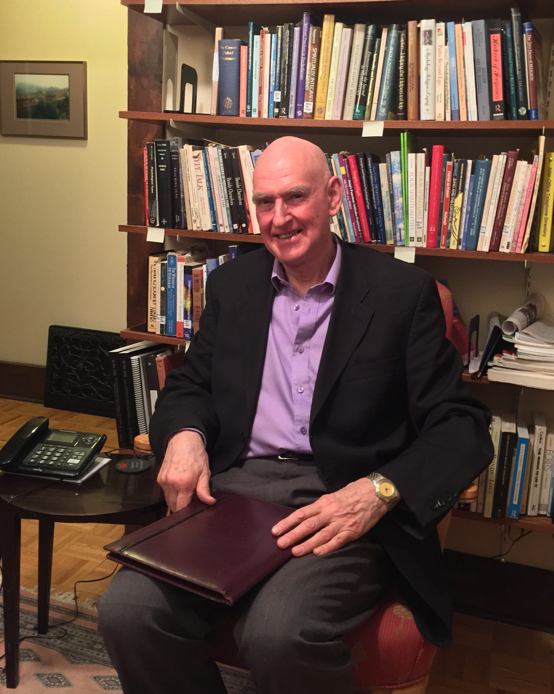
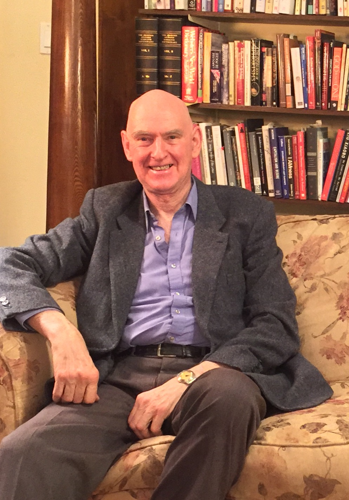

CHRISTOPHER ROSS
Background
Dr. Christopher Ross has provided psychotherapy and supervised that of other mental health professionals in a variety of settings including the Centre for Addiction and Mental Health (CAMH) and Youthdale Treatment Services in Toronto, and the Southdown Institute for Religious and Clergy in Aurora. Until recently Dr. Ross was Associate Professor in Psychology and Religion in the Department of Religion and Culture at Wilfrid Laurier University, Waterloo.
He is currently associated with Waterloo Lutheran Seminary teaching World Faiths in Psychological Perspective, and a course entitled Mindfulness and Psychotherapy. A current research project investigates how personality differences and familiarity with a variety of meditation methods may make psychotherapy and the development of mindfulness more efficient and effective in everyday-life.
He completed his doctoral training with Drs Charles and Robert Carkhuff, authors of Towards Effective Counselling and Psychotherapy, a classic text in the history of psychotherapy research.
Psychotherapy
Dr. Ross draws upon on a variety of psychological methods in the psychotherapy he provides individuals, couples and families. His priority for individuals seeking reduction in distress and increasing a sense of wellbeing is to connect them to capacities within for rest, resourcefulness and worth, and to alter patterns that prevent this connection.
Concerns
Those concerns that Dr. Ross’ clients have brought to him have varied from feeling anxious to feelings of being worn out, challenges to personal and social meaning, problems with intimacy and confidence, as well as the developmental issues that each life-stage presents:
“I have found many seeking help carry more grief than they realise, while others carry more anger. Mindful awareness of each releases energy that then naturally flows toward what they truly value that forms the foundation for strengthened self-esteem.”
Approaches
Dr. Ross uses a variety of approaches in the psychotherapy that he offers. For example, barriers to the ability to self-soothe are explored, as are belief systems – whether religious or secular - that bring suffering, or alternatively that provide a resource for the recovery of life satisfaction. While he may draw on his knowledge of psychological diagnoses to guide the healing process, more often he organises his work with clients around such existential concerns as finding meaning, dealing with death, loneliness and intimacy, and the sense of human freedom or its absence.

Fees
$135 Initial Consultation
Ongoing Psychotherapy – a sliding scale is applied
Consultations in Personality Type
As a supplement to psychotherapy or as an aid to a more personalised path to self-discovery and development, Dr. Ross finds two kinds of typologies of personality to be helpful, Jung’s typology using the Myers Briggs Type Indicator, and the Enneagram of the Narrative Tradition and the Riso-Hudson Enneagram Type Indicator. Much of his research and teaching while at the Department of Religion and Culture of Wilfrid Laurier University has centred upon application of personality type to personal and spiritual development over the human life-cycle.
Fee
$135 for initial and subsequent consultations
Psychotherapy Supervision
Dr. Ross has experience supervising the psychotherapy offered by health professionals and educators in a number of different settings, including out-patient and in-patient treatment at the Centre for Addiction and Mental Health in Toronto, Youthdale Treatment Centres in Ontario, and the NIMH-funded Comprehensive Community Mental Health Centre in Youngstown in Ohio. Currently his clinical supervision includes those seeking registration with the newly formed Ontario College of Psychotherapists.
Approaches
The methods that Dr. Ross uses in supervision vary with the needs of the individual psychotherapist. Overall he uses a competency based model pioneered by the American Psychological Association to organise the components of supervision that he provides. These may vary from case management methods, helping with premature terminations, low show rates and the intersection of gender, ethnicity and class for those professionals working in clinics and treatment services, to the intricacies of technique, transference and counter-transference in individuals’ independent practices. When needed he will advise on legal and ethical issues arising from the practice of psychotherapy.
